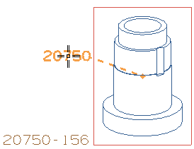

点击注释 。
在原点组中的对齐下方，点击自动对齐列表以查看所有可用选项，但确保没有改变所选项关联。
在自动对齐列表中，确保已选中相对于视图的位置复选框。
原来的注释中的文本仍然在注释对话框中。
将新注释拖动到正二测视图边界上。

当光标与图纸视图边界接触时，一条自视图中心延伸到注释中的辅助线，以及关联性指示符 出现在注释附近。
在辅助线仍然显示时，单击以放置注释。
点击鼠标中键或点击关闭。
现在您可以将这个注释移动到图纸页上的任意位置，并且辅助线将始终跟随它，但是，如果您将它拖动到另一个视图的边界内部，注释将变为与那一个视图关联。